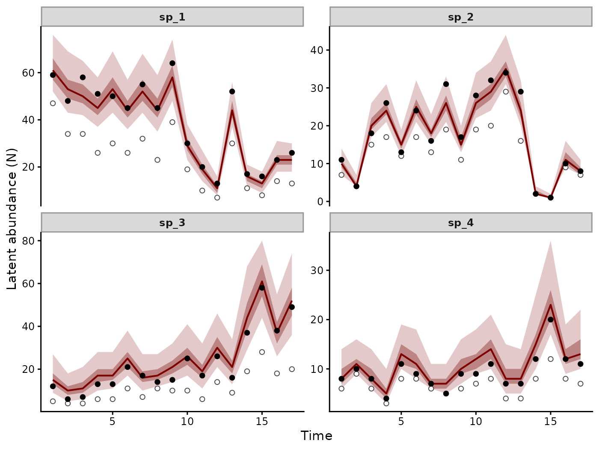
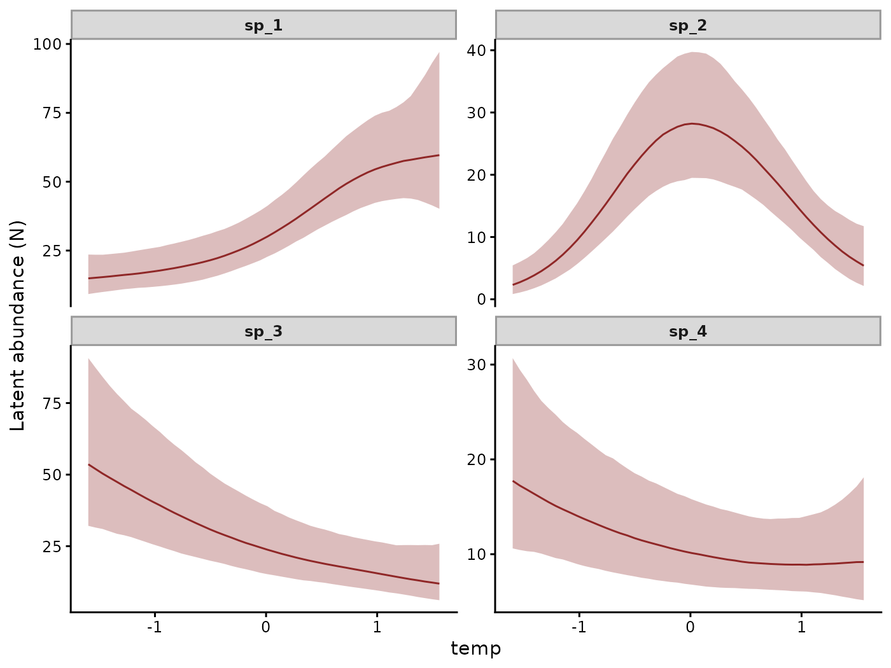
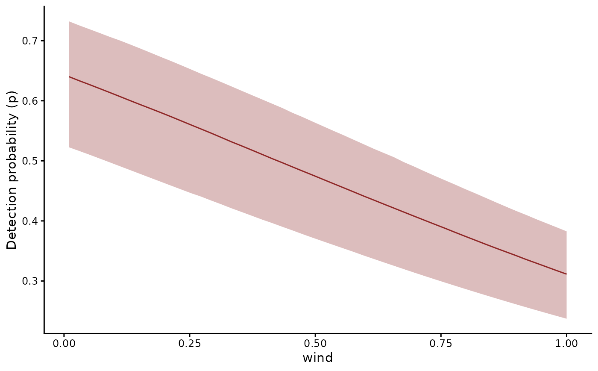
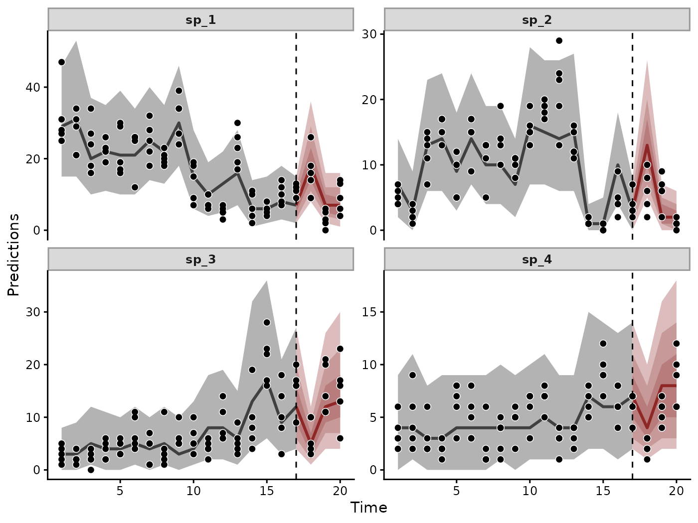

N-mixture models with mvgam
Nicholas J Clark
2026-10-28
Source:vignettes/articles/nmix.Rmd
nmix.RmdA count of animals mixes the number present with the chance of detecting each one. A single survey cannot tell a large population counted poorly from a small one counted well. N-mixture models separate the two with replicate visits made while the population is closed to change (Royle 2004). The mean of the replicate counts reflects abundance times detection. Their spread reflects detection alone.
The nmix() family places this model inside an mvgam
state-space model. The latent abundance can then follow a temporal
trend, respond to covariates through trend_formula and be
forecast. This article simulates yearly surveys of four species whose
abundances respond to temperature in different ways, while wind lowers
the chance of detecting them. One model recovers each species’ abundance
in every year, the two covariate effects and a forecast of the
counts.
The model
Species \(s\) is counted on visit \(r\) in year \(t\). Each count is a binomial draw from the \(N_{s,t}\) individuals present:
\[\begin{align*} y_{s,t,r} & \sim \text{Binomial}(N_{s,t}, p_{s,t,r}) \\ N_{s,t} & \sim \text{Poisson}(\lambda_{s,t}) \\ \log \lambda_{s,t} & = \alpha_s + f_s(\text{temp}_t) + z_{s,t} \\ z_{s,t} & \sim \text{Normal}(\phi_s z_{s,t-1}, \sigma_s) \\ \text{logit}(p_{s,t,r}) & = \gamma_s + \delta \, \text{wind}_{s,t,r} \end{align*}\]
Each species has its own smooth response \(f_s\) to temperature. Its AR(1) state \(z_s\) absorbs the year-to-year change that temperature leaves unexplained. Each species also has its own detection intercept \(\gamma_s\). All species share one wind effect \(\delta\) on detection.
Because Hamiltonian Monte Carlo cannot sample the integer \(N_{s,t}\), mvgam sums the likelihood over every value of \(N\) from the largest count up to a cap. Stan then samples only continuous parameters. The Stan User’s Guide chapter on latent discrete parameters describes the technique.
The data
To compare estimates with known abundances, we simulate four species surveyed on five visits in each of 20 years. The first species’ abundance rises with temperature and levels off. The second peaks at intermediate temperatures. The third declines. The fourth has a weak U shape. On every visit, the detection probability falls with wind speed.
set.seed(11)
n_sp <- 4
n_year <- 20
n_visit <- 5
species <- paste0("sp_", seq_len(n_sp))
# A yearly temperature index with mean 0 and SD 1
temp <- round(as.numeric(scale(
cumsum(rnorm(n_year, 0, 0.6)) + rnorm(n_year)
)), 2)
# AR(1) deviations in log abundance that temperature leaves unexplained
z <- matrix(0, n_year, n_sp)
for (t in 2:n_year) z[t, ] <- 0.6 * z[t - 1, ] + rnorm(n_sp, 0, 0.2)
# Each species' response to temperature on the log scale: a
# saturating rise, a hump, a decline and a weak U
temp_effect <- cbind(
0.8 * tanh(1.5 * temp),
0.6 - 0.6 * temp^2,
-0.5 * temp,
0.2 * temp^2 - 0.2
)
# Abundance N each year, around baselines of 30, 12, 20 and 10
log_lambda <- sweep(temp_effect + z, 2, log(c(30, 12, 20, 10)), "+")
N <- matrix(rpois(n_year * n_sp, exp(log_lambda)), n_year, n_sp)
# Logit detection intercept of each species
det_sp <- rnorm(n_sp, 0.3, 0.4)
# One row per visit, with wind speed recorded on each
dat <- expand.grid(visit = seq_len(n_visit), time = seq_len(n_year),
series = factor(species, levels = species))
dat$temp <- temp[dat$time]
dat$wind <- round(runif(nrow(dat)), 2)
dat$N <- N[cbind(dat$time, as.integer(dat$series))]
# Each individual present is counted with probability p, which falls
# with wind speed
p <- plogis(det_sp[dat$series] - 1.5 * dat$wind)
dat$y <- rbinom(nrow(dat), dat$N, p)
# Upper bound of the sum over N in each closure unit
dat$cap <- 80L
head(dat)
#> visit time series temp wind N y cap
#> 1 1 1 sp_1 1.07 0.77 59 25 80
#> 2 2 1 sp_1 1.07 0.14 59 31 80
#> 3 3 1 sp_1 1.07 0.50 59 28 80
#> 4 4 1 sp_1 1.07 0.04 59 47 80
#> 5 5 1 sp_1 1.07 0.36 59 27 80
#> 6 1 2 sp_1 1.56 0.20 48 21 80Each row is one visit. series names the species and
time the year. The visits that share a
(series, time) pair form one closure unit, over which \(N\) is fixed. cap bounds the
sum over \(N\) in each unit. It must be
at least the unit’s largest count. The model cannot estimate an
abundance above it. The simulated abundances peak at 64, which leaves
room below a cap of 80. Each unit of cap adds a term to the sum in every
closure unit at every iteration. The N column holds the
simulated abundance for comparison. The model never sees it.
The last three years are held out to score a forecast:
Fitting the model
To estimate abundance and detection together, we put one formula on
each inside bf(). The first describes abundance. The
second, p ~, describes detection.
trend_formula describes the latent log-abundance. In it,
by = lv_axis() gives each species its own smooth of
temperature. AR() gives each species its own AR(1)
state:
mod <- mvgam(
bf(y ~ series, p ~ series + wind),
trend_formula = ~ s(temp, by = lv_axis(), k = 5) + AR(),
data = train,
newdata = test,
family = nmix(),
chains = 4, seed = 11, silent = 2
)
summary(mod)
#> Family: nmix
#> Links: mu = log; p = logit
#> Formula: y ~ series
#> p ~ series + wind
#> Data: train (Number of observations: 340)
#> Series: 4
#> Trends: AR(1); formula: ~s(temp, by = lv_axis(), k = 5)
#> Draws: 4 chains, each with iter = 2000; warmup = 1000; thin = 1;
#> total post-warmup draws = 4000
#>
#> == Observation Model ==
#> Regression Coefficients:
#> Estimate Est.Error l-95% CI u-95% CI Rhat Bulk_ESS Tail_ESS
#> Intercept 3.52 0.13 3.30 3.78 1.00 1235 1232
#> p_Intercept 0.57 0.24 0.10 1.02 1.00 1141 278
#> seriessp_2 -0.92 0.19 -1.31 -0.57 1.00 1463 1879
#> seriessp_3 -0.37 0.28 -0.86 0.13 1.01 487 213
#> seriessp_4 -1.16 0.22 -1.56 -0.72 1.00 2295 2313
#> p_seriessp_2 0.41 0.27 -0.14 0.93 1.00 1861 2232
#> p_seriessp_3 -0.97 0.30 -1.54 -0.39 1.00 1519 2856
#> p_seriessp_4 -0.10 0.33 -0.76 0.52 1.00 2595 2540
#> p_wind -1.38 0.13 -1.64 -1.15 1.00 3110 3157
#>
#> == Trend Model ==
#> Smoothing Spline Hyperparameters:
#> Estimate Est.Error l-95% CI u-95% CI Rhat Bulk_ESS
#> sds(stempseriessp_1_1) 1.64 1.20 0.09 4.66 1.00 1359
#> sds(stempseriessp_2_1) 3.91 1.74 1.72 8.27 1.00 2563
#> sds(stempseriessp_3_1) 0.93 0.92 0.02 3.36 1.00 1774
#> sds(stempseriessp_4_1) 1.23 1.05 0.06 3.98 1.00 1736
#> Tail_ESS
#> sds(stempseriessp_1_1) 1498
#> sds(stempseriessp_2_1) 2672
#> sds(stempseriessp_3_1) 1664
#> sds(stempseriessp_4_1) 1740
#>
#> Regression Coefficients:
#> Estimate Est.Error l-95% CI u-95% CI Rhat Bulk_ESS Tail_ESS
#> stemp:seriessp_1_1 1.02 1.75 -2.55 3.96 1.00 940 383
#> stemp:seriessp_2_1 2.44 2.76 -2.97 8.00 1.00 2769 2751
#> stemp:seriessp_3_1 -3.02 1.29 -5.81 -0.37 1.00 2021 1995
#> stemp:seriessp_4_1 -1.02 1.54 -3.84 2.58 1.00 2352 1844
#>
#> Trend Specific Parameters:
#> Estimate Est.Error l-95% CI u-95% CI Rhat Bulk_ESS Tail_ESS
#> sigma_trend[sp_1] 0.12 0.08 0.00 0.32 1.01 590 276
#> sigma_trend[sp_2] 0.14 0.10 0.01 0.37 1.00 1129 1155
#> sigma_trend[sp_3] 0.19 0.11 0.02 0.42 1.00 1130 1226
#> sigma_trend[sp_4] 0.12 0.09 0.00 0.34 1.00 1817 1928
#> ar1_trend[sp_1] 0.01 0.42 -0.78 0.84 1.00 2066 1409
#> ar1_trend[sp_2] 0.12 0.41 -0.70 0.88 1.00 2420 1827
#> ar1_trend[sp_3] 0.15 0.39 -0.62 0.91 1.01 598 219
#> ar1_trend[sp_4] 0.03 0.39 -0.73 0.76 1.00 3315 2287
#>
#> Draws were sampled using sampling(NUTS). For each parameter, Bulk_ESS
#> and Tail_ESS are effective sample size measures, and Rhat is the potential
#> scale reduction factor on split chains (at convergence, Rhat = 1).
#>
#> Next steps:
#> - `pp_check(fit, type = "fit_stat")`: goodness of fit of unit totals
#> - `plot(hindcast(fit, type = "latent_state"))`: posterior abundance of each unit
#> - `forecast(fit, newdata = ...)`: out-of-sample forecasts
#> - `lfo_cv(fit)`: leave-future-out model comparison
#> - `conditional_effects(fit)`: covariate effects
#> Use `how_to_cite(fit)` for a methods paragraph and `methods_md(fit)` for its equations.The wind coefficient p_wind is -1.38 [-1.64, -1.15] on
the logit scale, against the simulated value of \(-1.5\).
Latent abundance
hindcast(type = "latent_state") returns the posterior of
\(N\) in each closure unit, conditional
on the counts observed there. Its plot() method returns a
ggplot, to which we add the simulated abundances and the
largest count of each year:
hc <- hindcast(mod, type = "latent_state")
truth <- unique(train[, c("series", "time", "N")])
counts <- aggregate(y ~ series + time, data = train, FUN = max)
plot(hc) +
geom_point(data = counts, aes(x = time, y = y), shape = 21,
fill = "white", colour = "grey30", size = 1.6) +
geom_point(data = truth, aes(x = time, y = N), size = 1.6)
Posterior medians with 50% and 95% credible intervals of each species’ abundance. Black points are the simulated abundances. Open circles are the largest count in each year.
Because detection is imperfect, every count falls below the abundance it came from. The posterior median of \(N\) exceeds the largest count in 65 of the 68 species-years. Its 95% intervals contain the simulated abundance in 68 of them. A model of the counts alone would report every population as smaller than it is.
Covariate effects
conditional_effects() accepts the N-mixture prediction
types. With type = "latent_state" it draws the expected
abundance against temperature. series = "all" gives each
species its own panel:
plot(
conditional_effects(mod, effects = "temp", type = "latent_state",
series = "all"),
ask = FALSE
)
Expected abundance of each species against temperature, with 95% credible intervals.
The four smooths take the shapes we simulated: a saturating rise, a
hump, a decline and a shallow U. With type = "detection",
conditional_effects() draws the detection probability
against wind speed:
plot(conditional_effects(mod, effects = "wind", type = "detection"),
ask = FALSE)
Detection probability against wind speed, with its 95% credible interval.
Forecasts
forecast() advances each species’ AR(1) state through
the held-out years. It combines the state with the temperature smooths
and passes the result through detection. The forecast is of the count on
each held-out visit:

Counts predicted on each visit over the training years and the three held-out years. Points are the observed counts.
score() evaluates the forecast against the held-out
counts. The forecast
evaluation article compares models on such scores.
Checking the fit
To test whether the model reproduces the variation among visits,
pp_check(type = "fit_stat") sums the counts of each closure
unit. It measures their discrepancy from the expected sum with the
chi-squared statistic of MacKenzie and Bailey (2004). It repeats the
calculation on counts replicated from the posterior:
fit_stat <- pp_check(mod, type = "fit_stat")
fit_stat
#> Posterior predictive check (closure-unit discrepancy)
#> Family: nmix
#> Statistic: chi-squared
#> Aggregation: closure unit
#> Posterior draws: 500
#> Bayesian p-value: 0.452A Bayesian p-value near 0 would mean the replicates rarely reach the
discrepancy of the observed counts. The value here, 0.45, gives no sign
of lack of fit. latent_N_saturation() reports the posterior
probability that \(N\) reaches the cap
in each unit:
sat <- latent_N_saturation(mod)
max(sat$p_saturated)
#> [1] 0.025The largest probability any unit gives to reaching the cap of 80 is 0.025.
Other observation processes
The binomial observation process assumes each individual present is
detected independently on each visit. nmix() offers two
more through its type argument. All three marginalise the
latent abundance in the same way. Every method used above works with
each of them.
| Variant | Constructor | Response | Detection |
|---|---|---|---|
| Poisson-binomial (Royle 2004) | nmix() |
Counts that cannot exceed \(N\) | Probability \(p\) per individual and visit, logit link |
| Royle-Nichols (Royle and Nichols 2003) | nmix("royle_nichols") |
Detection or non-detection | Probability \(r\) per individual. A visit detects the species with probability \(1 - (1 - r)^N\) |
| Poisson-Poisson | nmix("poisson_poisson") |
Counts that can record one individual more than once | Encounter rate \(p\) per individual and visit, log link |
Summary
From five counts a year, the N-mixture model recovered abundances
that the counts alone understate. Its 95% intervals covered the
simulated abundance in 68 of 68 species-years. The same fit recovered
four differently shaped responses to temperature and the wind effect on
detection. Because the abundance follows an mvgam trend, the fit also
forecast the held-out counts. All of this came from one
mvgam() call with family = nmix(), whose
observation formula describes detection while its trend formula
describes the latent abundance.
Where to next
Each function used here has a help page, such as ?nmix
or ?latent_N_saturation, with its arguments and output.
?nmix gives the identification conditions and default
priors of each variant. pivot_detection_array() converts
detection arrays from unmarked, spOccupancy or ubms into the long format
used here. occ() fits occupancy models to the same layout.
how_to_cite() writes a methods paragraph for a fitted
model, citing the N-mixture variant it used. methods_md()
writes out its equations.
Related articles:
- Joint species distribution models share latent factors among many species.
- Integrated distribution models combine several survey protocols that observe one population.
-
Formatting
data for mvgam covers the checks
mvgam_data()runs on closure-unit data.
References
MacKenzie DI and Bailey LL (2004). Assessing the fit of site-occupancy models. Journal of Agricultural, Biological, and Environmental Statistics 9(3), 300-318. doi:10.1198/108571104X3361
Royle JA (2004). N-mixture models for estimating population size from spatially replicated counts. Biometrics 60(1), 108-115. doi:10.1111/j.0006-341X.2004.00142.x
Royle JA and Nichols JD (2003). Estimating abundance from repeated presence-absence data or point counts. Ecology 84(3), 777-790. doi:10.1890/0012-9658(2003)084[0777:EAFRPA]2.0.CO;2